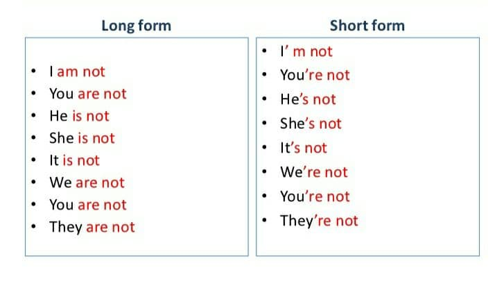
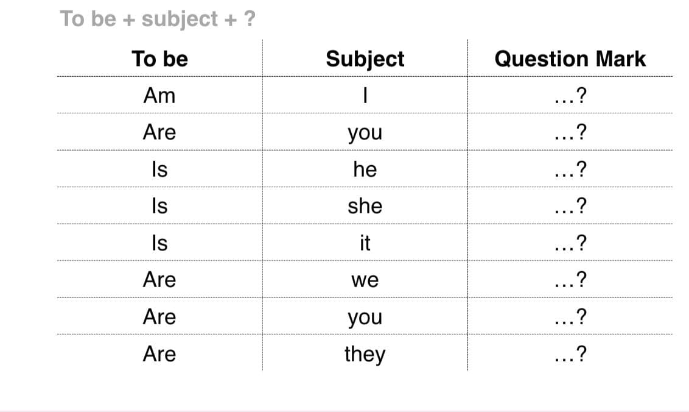

Welcome to UzEnglishAcademy!
"To Be" Fe'lining Present Simple(Hozrgi oddiy zamon)dagi shakli.
"To be" fe'li biz hammamiz foydalanishni o'rganadigon birinchi fe'ldir. Nima uchun deysizmi? Chunki u ko'p jihatdan qo'llaniladi. Biz "to be" fe'lini:
- ism, kelib chiqish, yoshi kabi shaxsiy ma'lumotlarni berishda
- his-tuyg'ularni tasvirlash uchun
- shaxsni, joyni yoki ob'ektni tasvirlash uchun
- ko'makchi fe'l sifatida davomiy zamon yasash uchun
ishlatishimiz mumkin.
Examples(Misollar)
Shaxsiy ma'lumotlarni berish va so'rash: ism, yosh, kelib chiqishi, manzili va boshqalarda ishlatilganda:
- What is your name? - My name is Lily.
(Ismingiz nima? - Mening ismim Lili.)
- How old is he? - He is 15.
(U nechi yoshda? - U 15 yoshda.)
Holatingiz va his-tuyg'ularingizni tasvirlashda:
- I am tired.
(Men charchadm.)
- The kids are bored
(Bolalar zerikishdi.)
Odamlarni, joylarni va narsalarni tasvirlashda:
- Marine is tall and thin.
(Marine uzun bo'yli va ozg'in.)
- Her car is beautiful and faster than mine.
(Uning mashinasi chiroyli va menikidan tezroq.)
O'tmishdagi, hozirgi va kelajakdagi progressiv harakatlar va vaziyatlarni tasvirlaydigan davomli zamonlarda ishlatilganda:
- She is learning English
(U ingliz tilini o'rganyapti.)
- What were you doing when he arrived? (were- "are" ning o'tkan zamondagi shakli)
(U kelganida nma qilayotgan edingiz.)
- I'll be waiting for you at the entrance to the cinema
Men sizni kinoteatr eshigida kutayotgan bo'laman
To be fe'li uch xil shaklga ega. Bugun bizPresent Simle ya'ni hozrgi oddiy zamondagi shakllarini o'rganamiz. Ular: am, is, are.
| Singular (birlik)da ishlatilganda |
Plural (ko'plik)da ishlatilganda |
| I am(I'm) |
We are(We're) |
| You are(You're) |
You are(You're) |
| He/She/It is(He/She/It's) |
They are(They're) |
Examples(Misollar)
- I am a doctor.
(Men shifokorman.)
- Yelena is short but beautiful girl.
(Yelena kalta bo'yli lekn chiroyli qiz.)
- They are clever and hardworking people
(Ular aqilli va mehnatsevar odamlar
Negative form ya'ni inkor shaklida am, is, are dan keyn NOT ishlatiladi.

Examples(Misollar)
- I am not a student.
(Men student emasman.)
- She is not25 years old.
(U 25 yoshda emas.)
- They are not my friends.
(Ular mening do'stlarim emas.)
Interrogative form ya'ni so'roq shaklida am, is, are gapda subject ya'ni egadan oldinga o'tadi.

Examples(Misollar)
- Is she a nurse?
(U hamshirami?)
- Ishe your brother?
(U seni akangmi?.)
- Are they your pupils?d
(Ular sening oquvchilaringmi?)
Ingliz tilidagi boshqa darslar ro'yxati: